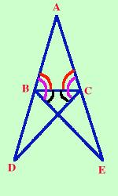

Il teorema sembra difficile, ma pensa a quello che devi dimostrare: devi dimostrare che il triangolo ha due angoli congruenti; per poterlo dimostrare costruiamo dei triangoli congruenti che comprendano gli angoli in questione all'interno di un loro angolo (in viola),  dimostriamo poi che sono congruenti due triangoli che hanno come angoli (in nero) la differenza fra tutto l'angolo costruito e quello che dobbiamo dimostrare congruente. Questo modello di ragionamento:
sara' usato spesso sia in geometria che nelle matematiche in generale |